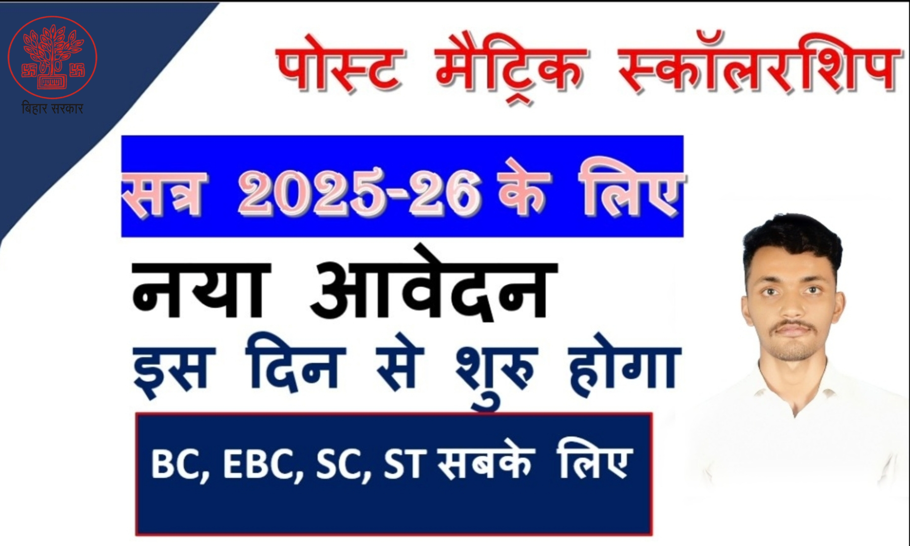

Bihar Post Matric Scholarship 2025-26– Online Apply
बिहार पोस्ट मैट्रिक स्कॉलरशिप 2025-26 के लिए ऑनलाइन आवेदन शुरू हो गया है।
इस पोस्ट में पूरी जानकारी दी गई है।

Bihar Post Matric Scholarship 2024-25:-अगर आप भी बिहार के रहने वाले विद्यार्थी अजीनो ने सत्र 2024 में मैट्रिक 1st डिवीजन से परीक्षा पास किया है और पोस्ट मैट्रिक स्कॉलरशिप के लिए आवेदन प्रक्रिया शुरू होने का इंतजार कर रहे हैं तो हम आप सभी परीक्षार्थियों को बता दे कि आपका इंतजार बहुत जल्द खत्म होगी क्योंकि Bihar Post Matric Scholarship 2024-25 के अंतर्गत आवेदन प्रक्रिया को शुरू कर दिया गया है,जिसकी पूरी जानकारी हम आपको अपने इस आर्टिकल में विस्तारपूर्वक से Bihar Post Matric Scholarship 2024-25 के बारे में प्रदान करेंगे
हम आपको अपने इस आर्टिकल के मदद से विस्तार पूर्वक से बताएंगे कि आप इस स्कॉलरशिप के लिए आवेदन कैसे कर सकते हैं इसके लिए आपके पास क्या योग्यताएं होनी चाहिए इस स्कॉलरशिप योजना में आवेदन करने के लिए आपको किन-किन दस्तावेजों की जरूरत पड़ेगी आदि के बारे में विस्तार पूर्वक से Bihar Post Matric Scholarship 2024-25 के बारे में प्रदान करेंगे
हम आपको अपने इस आर्टिकल के अंत में उपयोग किए जाने वाली सभी महत्वपूर्ण लिंक का लिंक नीचे प्रदान कर देंगे ताकि आसानी से इस प्रकार का आर्टिकल का लाभ प्राप्त कर सके
Overview
Scheme Name
Bihar Post Matric Scholarship
State
Bihar
Apply Mode
Online
Category
SC / ST / BC / EBC
Important Dates
Apply Start
25-08-2026
Last Date
15-11-2026
Eligibility
आवेदक बिहार का निवासी हो
10वीं पास होना अनिवार्य
SC / ST / BC / EBC वर्ग
इस स्कॉलरशिप का अंतर्गत आवेदन करने के लिए नीचे दिए गए सभी योग्यताओं को पूर्ति करनी होगी जिसकी पूरी जानकारी नीचे दी गई है-
इस स्कॉलरशिप के अंतर्गत आवेदन करने के लिए आपको बिहार राज्य के मूल निवासी होने चाहिए
आवेदन करने अनुसूचित जाति,अनुसूचित जनजाति पिछड़ा वर्ग और अत्यंत पिछड़ा वर्ग के श्रेणी का होना चाहिए
इस स्कॉलरशिप के अंतर्गत आवेदन करने के लिए आपके परिवार का सालाना आय ₹300000 से कम होनी चाहिए
ऊपर में दिए गए सभी योग्यताओं को पूर्ति करके आप आसानी से इस स्कॉलरशिप के लिए आवेदन कर सकते हैं तथा इसका लाभ प्राप्त कर सकते हैं
Documents
विद्यार्थी का आधार कार्ड
बैंक खाता पासबुक
बिहार राज्य का मूल निवास प्रमाण पत्र
दसवीं कक्षा का अंक पत्र व प्रमाण पत्र
चालू मोबाइल नंबर
Caste Certificate
Income Certificate
Domicile Certificate
How To Apply (Video)
How to Apply for Bihar Post Matric Scholarship 2025-26 ?
Bihar Post Matric Scholarship 2025-26 के अंतर्गत स्कॉलरशिप के लिए आवेदन करने के लिए नीचे दिए गए सभी स्टेप्स को फॉलो करना होगा जो कि इस प्रकार से हैं-
Bihar Post Matric Scholarship 2024-25 के अंतर्गत स्कॉलरशिप के लिए आवेदन करने के लिए सबसे पहले आपको इसका ऑफिशल वेबसाइट के होम पेज पर आना होगा
Gaurav Yadav is a passionate blogger with a deep interest in providing
the latest information on jobs, education, scholarships, and government
schemes. His mission is to empower readers with the knowledge they need
to achieve their goals and lead fulfilling lives.
RGA DIGITAL SEVA एक सरकारी वेबसाइट नहीं है और इसका किसी सरकारी मंत्रालय या विभाग से कोई संबंध नहीं है।
यह ब्लॉग एक व्यक्तिगत प्रयास है, जिसे उन लोगों की सहायता के लिए बनाया गया है जो सरकारी योजनाओं और अन्य शैक्षिक जानकारी के बारे में सटीक और अपडेटेड जानकारी प्राप्त करना चाहते हैं। हमारी टीम यह सुनिश्चित करने का प्रयास करती है कि हर लेख में आपको सटीक जानकारी मिले, लेकिन हम त्रुटियों की संभावना से इंकार नहीं कर सकते।
हमारे सभी लेखों में संबंधित योजना की आधिकारिक वेबसाइट का लिंक दिया गया है, और हम आपसे अनुरोध करते हैं कि आप जानकारी को सत्यापित करने के लिए हमेशा आधिकारिक वेबसाइट का संदर्भ लें। यदि आपको किसी लेख में कोई त्रुटि मिले, तो कृपया हमें सूचित करें, ताकि हम उसे सुधार सकें। इस वेबसाइट के माध्यम से कभी भी किसी के द्वारा पैसे की मांग नहीं की जाती है यह वेबसाइट पूर्णतः निशुल्क सूचना प्रदान करती है, सिर्फ जानकारी आप तक सरल तरीकों से पहुंचे यही हमारा उद्देश्य है, हमारे दिए गए सूचनाओं को एक बार अपने द्वारा जांच परख लें | धन्यवाद